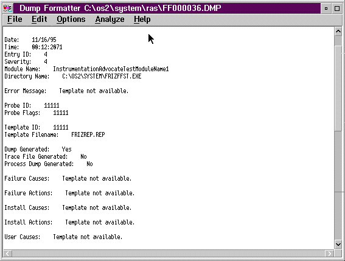

When you select the Error Log Data choice, the PM Dump Facility dump formatter reads the error data from the dump file. The dump formatter then displays the error log entry in the same format as the SYSLOG Details record. There is always Error Log data in an FFST dump. The system always allows you to select this option.
You can find more information on error logs in Viewing
and Analyzing Error Log Entries.
Error Log Data in PM Dump Facility Dump Formatter Window
